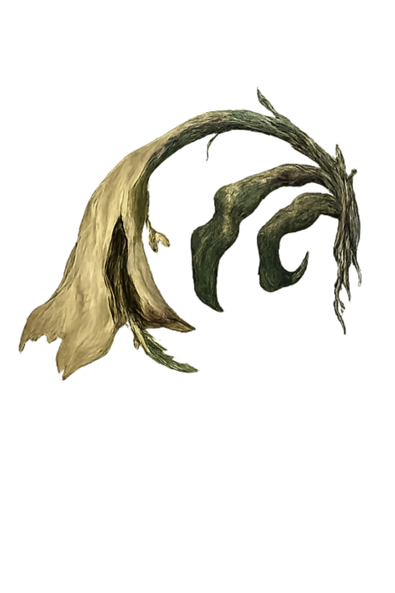
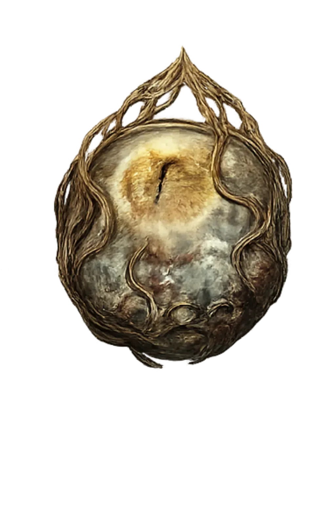
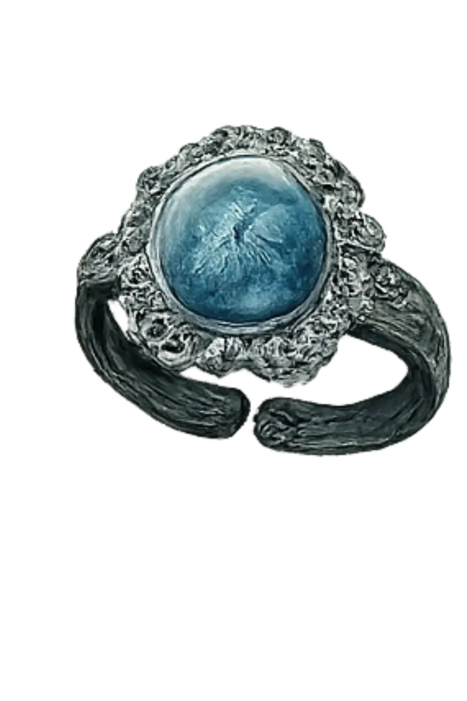
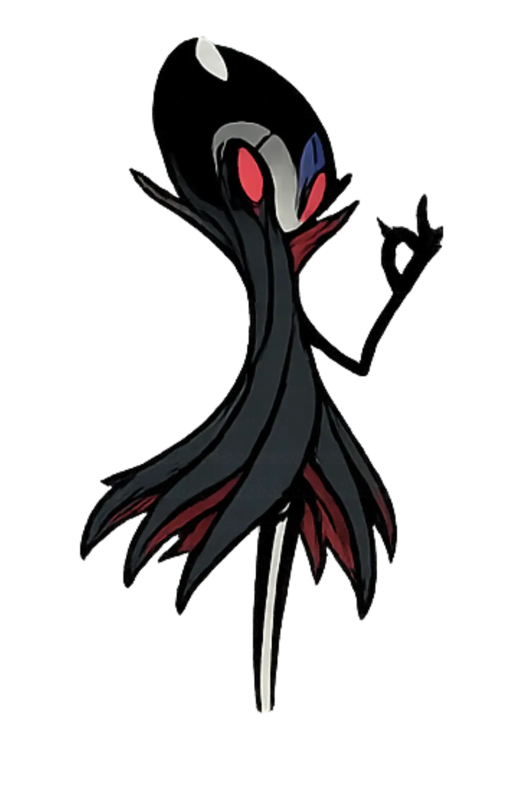

"Sei lá, eu jogo jogos difíceis, e de vez em quando posto isso nas redes sociais, faço desafios de não tomar dano e gasto muitas horas e paciência pra derrotar chefes -_-"
[Elden Ring 1] Fui pra cima do Mohg achando que ia ser de boa, mas o maluco começou a transformar a arena num inferno KKKKKK. Eu tentando bater nele enquanto o chão inteiro tava pegando fogo. No final foi só correr, bater e torcer pra não tomar uma porrada
[Elden Ring 2] Mano, enfrentar o Radahn é simplesmente maluquice KKKKKK. Eu cheguei todo confiante e o desgraçado já veio voando pra cima de mim. Quando ele começou com aqueles ataques de gravidade, eu só tava tentando sobreviver. Foi uma luta do caralho até conseguir derrubar esse maluco.
[Elden Ring 3]Mano, essa luta foi pura trocação KKKKKK. Eu chegava pra bater e o desgraçado já respondia na hora. Teve uns momentos que eu achei que ia morrer, principalmente quando ele começou a soltar aqueles ataques de fogo. Foi na raça até o final
[Elden Ring 4] Aqui eu fui na base da porrada mesmo KKKKKK. O bicho ficava pulando pra todo lado e eu tentando acompanhar essa desgraça sem tomar um combo. Quando consegui encaixar meus ataques, foi só sangue pra todo lado
[God of War] Partiu enfrentar a Vanadís no meio da nevasca e não foi mole não! Machado voando, chama vermelha pipocando na tela, aquela treta gelada até o fim. Boss braba de doer, mas o Kratos não perdoou
[Hollow Knight Panteão] Encarando o Panteão que é osso duro de roer, salão cheio de estátua e aquela vibe sombria clássica de Hallownest. Rush difícil, boss atrás de boss, sem dó nem piedade
[Hollow Knight Radiance] Aí sim, o chefão final! A Radiance surgindo enorme, brilhando pra caramba e chovendo espinho pra tudo quanto é lado. Aquela luta punitiva que separa os cria dos boss man de verdade
[The Last of Us 2, 1]Abby gritando "prepara!", clima tenso, corredor escuro e o perigo espreitando. Ação crua e sem tempo pra respirar, aquele sufoco típico de TLOU
[FOR HONOR] Essa luta no For Honor foi aquela putaria KKKKKK. Eu tava tentando ler os golpes do cara, mas toda hora ele inventava alguma merda diferente. Quando começou a trocação de verdade, foi bloqueio, esquiva e porrada pra todo lado. No final eu só queria sair vivo dessa desgraça